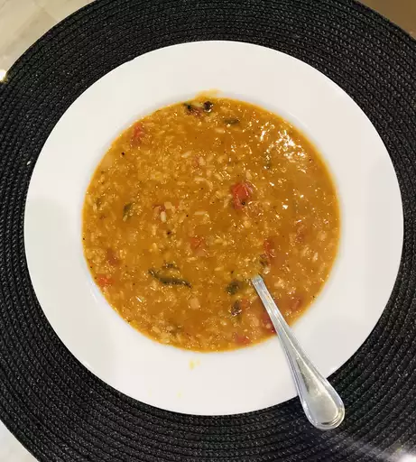

Turkish Red Lentil Soup
This soup is divine and much like you will get at any authentic Turkish restaurant. It has dynamic flavors and a lovely mild heat.
Ingredients
- 2 tablespoon olive oil
- Half an onion diced
- 1 Clove of garlic
- 2 Diced tomatoes
- 5 cups of chicken stock
- Half a cup red lentils
- And some more stuff
- Google it
Steps
- Heat the olive oil in a large pot over high heat. Cook and stir the onion in the hot oil until it begins to soften, about 2 minutes. Stir the garlic into the onion and cook another 2 minutes. Add the diced tomatoes to the onion mixture; continue to cook and stir another 10 minutes.
- Pour in the chicken stock, red lentils, bulgur, rice, tomato paste, paprika, cayenne pepper, and mint to the tomato mixture; season with salt and black pepper. Bring the soup to a boil, reduce heat to medium-low, and cook at a simmer until the the lentils and rice are cooked through, about 30 minutes.
- Pour the soup into a blender to no more than half full. Firmly hold the lid in place and carefully start the blender, using a few quick pulses to get the soup moving before leaving it on to puree. Puree in batches until smooth; pour into your serving dish. Alternately, you can use a stick blender and puree the soup in cooking pot.
